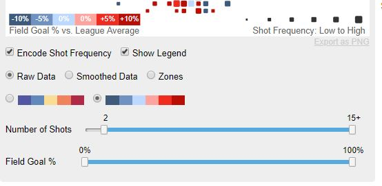
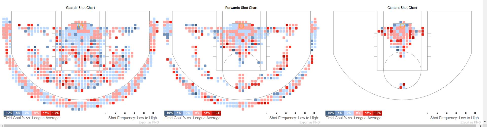
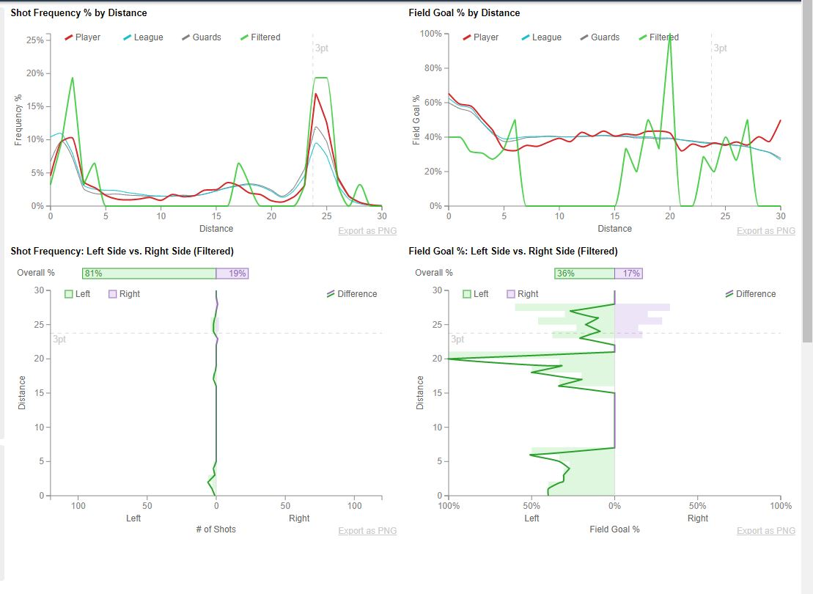
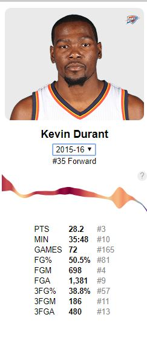

Now as much as I really enjoyed playing around with this visualization there were some things that I did not like nore did I enjoy with it. But that's to be expected! Not everything is perfect.

So the first thing that I noticed was these sliders are pretty ambigious at firt glance. It took me a bit to really understand what the data was trying to represent. I think that it is a good feature to have, this definitely needs more clarity in terms of what it actually does and what it means.
Another issue I see with the image above is if you see the percentages there are two colors representing 0%. I understand that it maintains a nice incrementation level but I think that its not good to have 0% on two spectrums of colors. I also didnt like how it uses the word "Encode Shot Frequency." All it does is scale the square to the frequecy, but just at first glance it doesn't look like it'd mean that. I'd rather the toggle box say something like scale frequency because that's all it does anyways.

A very small issue that I found annoying, but understandable was that the load time for the league overall data did take significantly longer than the other data. This makes sense though because it does use all the data, but it still can crash out.

The next detail that I thought was flawed was taht the hovering feature hovered over every graph which was cool if you wanted to compare all the data. However, if you want to view a single charts data without being flustered from all the other interactiveness. I wish there was a toggle feature to view all or view individual, but I am afraid of the level of complexity that may add to the visualization.

The last little detail that I didn't like is the years of available data. Now this dislike I have for it is mostly because the data is old and only a small selection of data. This is understandable as well though because when this site was made it did was the most recent data at the time. However, I wish there was more data that dated back more. It would have things a little bit slower, but even to have a couple more years would really show more interesting correlations and progressions.